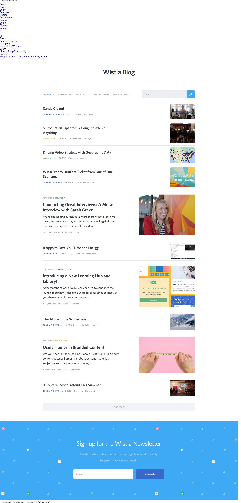

This is an example of a full-image background landing page that is being widely used. It is beneficial in the design and development of a more simple and minimalistic design. Personally I like the use of these with both the "hamburger" menu icon and/or the use of a bottom navigation bar. I am not convinced video as a background is the way to go yet for a broad targeted audience due but the time is coming close when I think it could be used more mainstream. I also like the use of this to come up with more unique navigational methods. This is often the starting point for parallax scrolling, which needs to be used very carefully. In many viewers, the "fun" aspect of parallax can cause dizziness and vertigo and is completely not a good user experience. One site I am showcasing for some other components, uses parallax and when you use the navigation the pages fly by so fast it almost gives you a headache. To me, these are bad uses of parallax and make for a bad user experience.
Examples of Headers
Wistia Top Nav Bar on Landing Page
Overall I like the concept of this nav bar. Unfortunately this company is not utilizing it consistently. It also is very easy for the user to get lost when inside the the site. They have a few ways of navigating around between the pie menu, which I think is excellent as well as the top nav bar. The lack of breadcrumbs inside is a huge issue though nor is the nav bar consistently transitioned in a way that reflects the user's position within the pages.
As can be seen the top nav bar consists of two layers of Main Categories which then display the sub-category options when the page changes, rather than having them within in a drop down. There are studies that show that users aren't that fond of drop boxes, especially as they get more and more complex, so I believe this is a clear simple option.
Full Page Pie Menu
I do like the way the "hamburger" opens up to a full page detailed, clear and concise menu options, with an easy close and very legible, leading the way to all areas of the site. However, is full-page a bit of overkill? Perhaps so, the empty blue space to the right side is large and I am not a fan of it, though I understand the desire to not have it be a half-page either. In this case it is a matter of personal opinion and tastes, in which case would fall to the client.
Wistia Top Nav Bar from the Products Page
Here you can see the Top Nav Bar from the products page showing the lack of detail as to where the user is. If you look close you can see the tab flows into the page, but with the only differentiation being a very thin border line, there really should be greater differentiation in appearance. Honestly, by looking at the blue button I'd think that was the active element, but it is not. The whole set up overall has a lot of potential, and I like it. I would definitely re-work it to make it more consistent. I use a lot of elements from this site and it can be visited at their website located at Wistia.
Wistia Top Nav Bar from Learn Page
Examples of CTA
Examples of Features
Wistia Features Page
This is the features page of the Wistia site. Despite the fact it is parallax I like the way they have it set up. There isn't any of the "window" type features that tend to bring on the dizziness feeling. It's all the same background and divided into three sections. These sections are one for each of the three different plans and goes into details for each. There is some fast scrolling which I might personally slow down a bit but with the solid background it is not that unpleasant. The only color differentiation in the background is that for the second plan they go from a white background to more of a grey which helps call it out as a different section, if you were to scroll through the page manually.
The Nav Bar for this page is positioned beneath the photograph and this time it is with icons. To me, this is another example of inconsistency. The site as a whole has a definite issue with consistent user interactions and experience. However we are looking at components and so far as that goes, there are many of those that hold promise in so far as being utilized if in a bit of a different manner.
Examples of About Pages
Examples of Blog Pages

Wistia Blog Site
I definitely am not impressed in their blog site and use this as an example of what I don't want to see or do. There is no consistency in the image sizes floated to the right, which would just annoy me. As well, the broken nav bar up at the top of the page. The lack of blog entry summaries bothers me as well. It is hard to know what the article is about or why I should go read it. There needs to be a "teasing" beginning read of at least the first paragraph or some type of compressed "what this article is about" so that the user has some way of knowing if this is an article worth reading. They are not going to click on every article to browse through it. People do not read like that anymore.
Examples of Contact Pages
Examples of Login/Registration Pages
Wistia Log in PageWistia Registration Page
I like the formatting and layout of the log in page. Many clients would like a social networking capability to log in as well, of which I will find an example of. I also would modal this rather than going to a separate page. But I like the layout. Simple and effective.